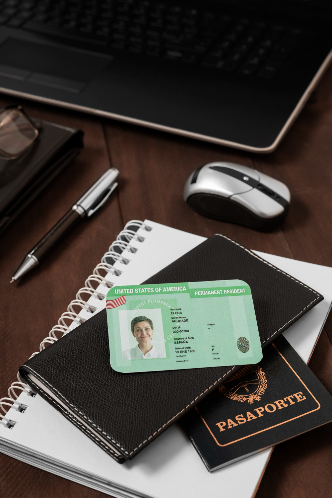

Drivers' Licences - Motocycles, Cars, & Commercial
An Ontario's driver's licence is your proof of your privilege to drive. You must carry it with you whenever you get behind the wheel.
Anyone interested in driving a motorcycle, scooter, moped, or motor tricycle must apply for a Class M licence and participate in the graduated licensing program.
There are millions of licensed drivers in Ontario. Most of these drivers started by visiting a DriveTest Centre and applying for a Class G licence. A Class G licence enables you to drive a car, van, or small truck.
Driving a commercial vehicle, such as a tractor-trailer, truck, bus, or ambulance, requires skill and a specialized/classified licence.
Image by Freepik
About Ontario Drivers' Licences
In Ontario, there are 12 different licence classes. Each one qualifies you to drive a different type of vehicle.
There are passenger vehicle licence types and commercial (classified) vehicle licence types. You may hold a licence in more than one class, and licence types may be combined (e.g., an ABM licence).
The class of licence you have must match the type of vehicle you are driving. To earn a driver's licence, you must meet a set of minimum requirements and complete the required tests.
Tests for cars, vans, and small trucks must be completed at a DriveTest Centre. Tests for motorcycles and commercial vehicles may be completed at a DriveTest Centre or at certain professional or academic organizations authorized by the Ministry of Transportation.
Driver's Licence Photo Cards

Image by Freepik
Official Ontario driver's licence photo cards are one piece, made of plastic, and include your digitized photograph and signature. An Ontario driver's licence includes your name, address, date of birth, gender (M, F or X), height, licence class, date of licence issue, expiry date, and codes showing which classes of vehicles you may drive and any applicable conditions.
Temporary driver's licences are short-term documents used by licensed drivers prior to receiving an official Ontario driver's licence card in the mail. Temporary driver's licences are valid for up to 90 days.
As a licence holder, you must keep your licence information up-to-date and renew your driver's licence card periodically. If your driver's licence expires, depending on the length of time it has been expired, you may need to reapply.
A driver's licence and an Ontario Photo Card or a driver's licence/photo ID card from another province, state or country cannot be held at the same time. If you have an Ontario Photo Card or a photo ID card from any other province, state or country, you must turn in your existing ID and any driver's licences when applying for an Ontario driver's licence.
Please inform DriveTest if you have ever held an Ontario Photo Card, even if it is expired or cancelled, when you apply for a driver's licence. Not doing so may delay getting your driver's licence.
If you have an Ontario Photo Card and want to get a driver's licence, you must give up your Ontario Photo Card. Your Ontario Photo Card will be cancelled upon successful completion of the required testing. If you wish to re-apply for your Ontario Photo Card, you must give up your driver's licence.